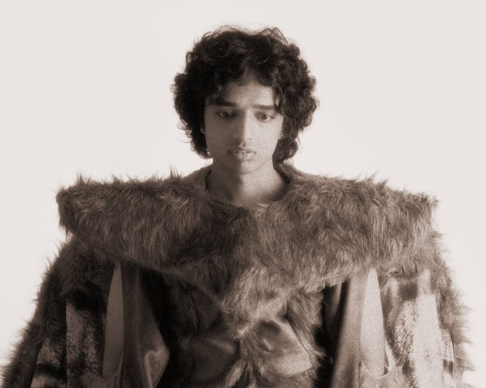

About
Chaar Diwaari is the musical alter-ego of Garv Taneja, a producer,
singer, songwriter, and visual artist from New Delhi. Translating
literally to "four walls," the name represents an imagination that
refuses to stay within boundaries.
His music exists somewhere between experimental Hindi hip-hop,
alternative sounds, electronic production, aggressive noise, and
cinematic Bollywood-inspired influences. The result is a sound that is
often chaotic, funny, uncomfortable, emotional, and completely
unpredictable.
The World of Chaar Diwaari
More than just the music.
Chaar Diwaari's world extends beyond his songs. His visual identity is
an important part of his work, with surreal imagery, unusual characters,
DIY aesthetics, and music videos that often feel like short films rather
than traditional promotional videos.
Chaos with intention.
A Chaar Diwaari track can move from humour to rage to vulnerability
within minutes. His work plays with discomfort and absurdity while still
leaving space for personal emotions underneath the noise.
A different kind of pop star.
Rather than staying inside one genre, his music constantly shifts
between different sounds and influences. That willingness to experiment
has helped make him one of the more distinctive voices in India's
independent music scene.
.jpg )